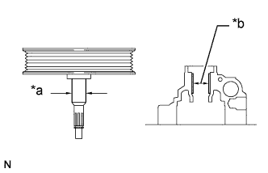
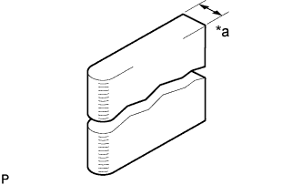
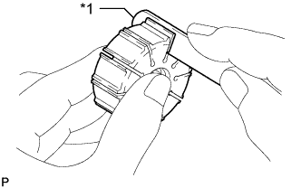

ЛОПАСТНОЙ НАСОС (для моделей с двигателем 1GR-FE) > ПРОВЕРКА |
| 1. ПРОВЕРЬТЕ ВАЛ ЛОПАСТНОГО НАСОСА И ВТУЛКУ В ПЕРЕДНЕМ КОЖУХЕ ЛОПАСТНОГО НАСОСА |
|  |
С помощью микрометра измерьте наружный диаметр вала лопастного насоса.
| *a | Наружный диаметр |
| *b | Внутренний диаметр |
С помощью штангенциркуля измерьте внутренний диаметр втулки переднего кожуха лопастного насоса.
Рассчитайте масляный зазор.
Масляный зазор = внутренний диаметр втулки - наружный диаметр вала.
| 2. ПРОВЕРЬТЕ РОТОР ЛОПАСТНОГО НАСОСА И ПЛАСТИНЫ ЛОПАСТЕЙ |
|  |
Микрометром измерьте толщину пластин лопастей насоса.
| *a | Толщина |
|  |
С помощью плоского щупа измерьте зазор между боковой поверхностью канавки ротора лопастного насоса и пластинами лопастей.
| *1 | Плоский щуп |
| 3. ПРОВЕРЬТЕ ШТУЦЕР ВЫПУСКНОГО ОТВЕРСТИЯ |